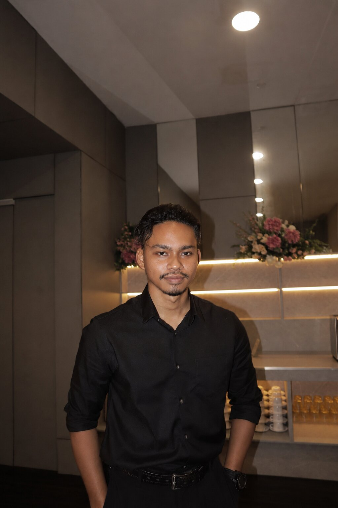

About
I design and build with usability in mind.
I am Daniel Dev, a Bachelor of Computer Science student specializing in Multimedia Computing at UTeM. I enjoy creating digital experiences that combine structure, creativity, and clear interaction.

Who I Am
My main interest is in multimedia work such as video editing, Photoshop based visuals, motion content, and creative digital production. I also have coding knowledge and can build functional web and software projects when needed.
Outside of computing, I also have experience as an acting extra on production sets, and I am interested in exploring more serious acting opportunities in the future.
I am also a PADI Dive Master, which has helped me develop discipline, awareness, leadership, and confidence in challenging environments.
Career Objective
To become a skilled multimedia and software professional capable of developing modern digital solutions, user-centered interfaces, and reliable web experiences.